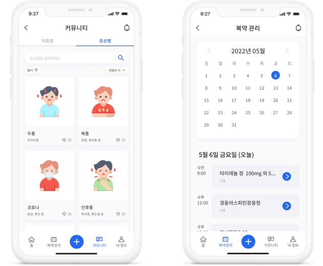
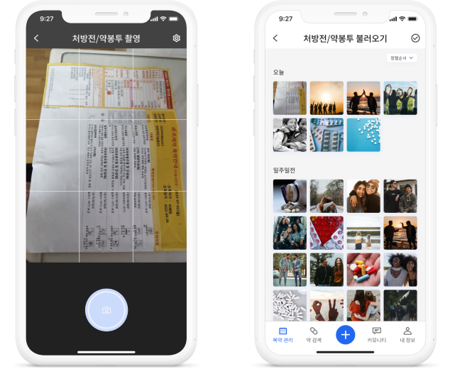
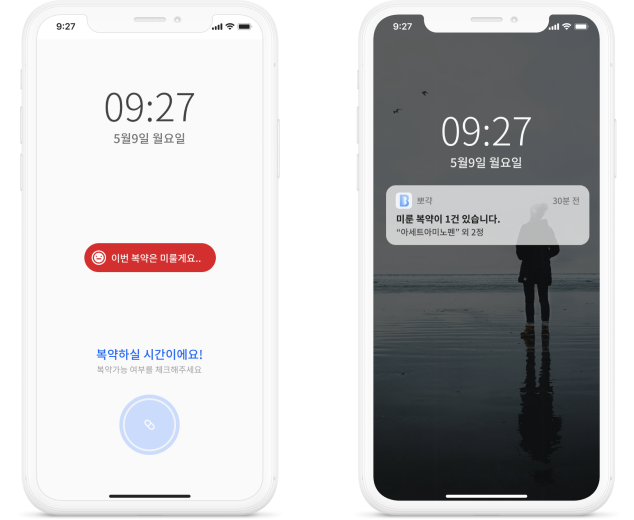

“복약 정보에 대해 쉽고 빠르게 알고 싶어!”
최근 들어 잘못된 복용 방법으로 약 부작용을 겪는 사례들이 빈번하게 발생하고 있습니다. 인터넷 발달로 쉽게 얻을 수 있게 된 정보들이 오히려 독이 되어 잘못된 지식을 전달하고 있습니다. 뽀갹은 이러한 문제점에서 출발하였습니다.
사용자 맞춤 서비스 제공
사용자 데이터를 기반으로 개인에게 필요한 영양소 및 약품 정보를 제공하고 복약시간을 알려주는 개인 맞춤 서비스와 자율적으로 약 정보를 교환하는 복약공유 커뮤니티 서비스를 제공합니다.


처방전 촬영으로 간편한 알림설정!
사용자 데이터를 기반으로 개인에게 필요한 영양소 및 약품 정보를 제공하고 복약시간을 알려주는 개인 맞춤 서비스와 자율적으로 약 정보를 교환하는 복약공유 커뮤니티 서비스를 제공합니다.
까먹는 사람을 위한 재알림까지
약의 종류와 복약시기에 따라 복약을 놓쳤을 떄 대처법이 다르다는 사실, 알고 계셨나요? 드시는 약에 따라 복약 가능 시간 내에 재알림을 설정해 드려요. 놓친 약에 대한 가이드도 알려드릴게요!

뽀갹과 지금 바로 함께 하세요
2022 UX/UI Design
‘BBOKYAK’